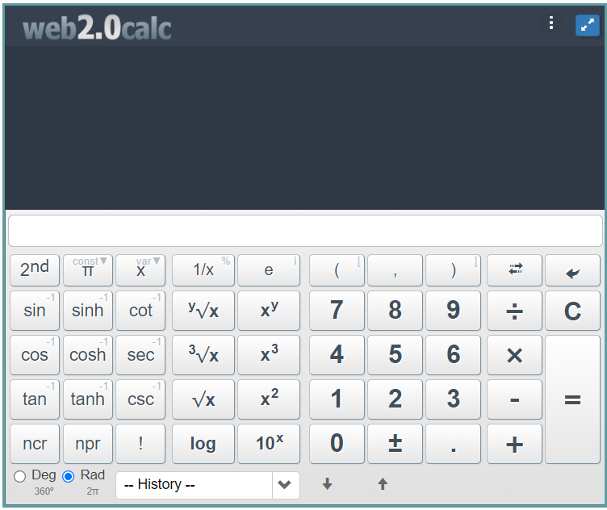
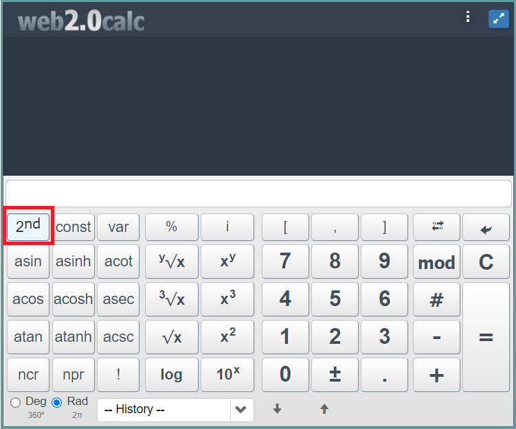
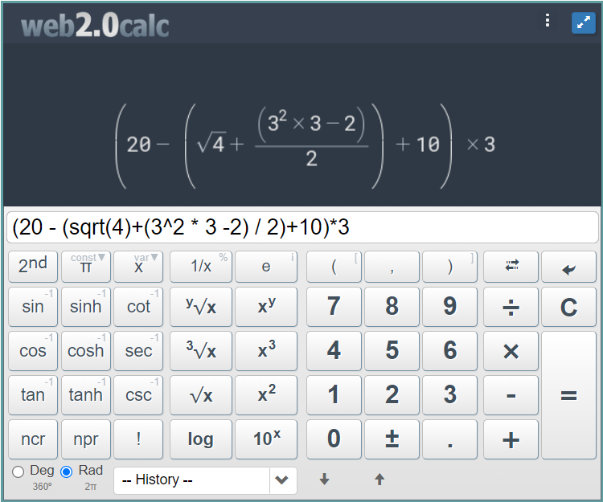

2 O uso da calculadora científica em Ciências Naturais
Uma vez que os cálculos em ciências naturais são, muitas vezes, complexos e extensos, surge a necessidade da utilização de computadores e calculadoras. Nesse sentido, o estudante deve compreender e operar as funções desses dispositivos facilitadores dos cálculos.
Neste capítulo, busca-se dominar o uso das funções básicas de uma calculadora científica. As dicas são relativas às funções primárias e secundárias, além de, exemplificar o uso dos parênteses em calculadoras científicas.
Por fim, tome cuidado, pois as calculadoras apenas facilitam os cálculos, ademais os alunos necessitam entender o problema antes de utilizá-la.
2.1 Dicas básicas
Antes de colocar a “mão-na- massa”, deve-se explorar o funcionamento básico das calculadoras. A calculadora possui funções básicas, as quais podem ser primárias ou secundárias. Vamos começar com as seguintes dicas:
Para acessar as funções secundárias (segunda função), deve-se apertar “2ND”, “INV” ou “SHIFT”;
Selecione corretamemente as funções que determinam medidas angulares (graus ou radianos);
Atente para o uso dos parênteses na definição das operações;
Existem diversos fabricantes de calculadoras e cada um deles têm um padrão diferente, nesse sentido, é necessário consultar o manual de cada dispositivo para conhecer suas particularidades.
2.2 Como usar as funções básicas da calculadora
A figura abaixo mostra uma calculadora científica básica on-line. clique aqui para acessar a calculadora.
A Figura 2.1 traz a calculadora com todas as funções primárias.

Já a Figura 2.2 mostra as funções secundárias do dispositivo, ou seja, as funções que aparecem após acionarmos o botão “2ND” marcado em vermelho.

A seguir, tem-se algumas funções básicas:
| Operação | Função | Tipo de função |
|---|---|---|
| \(+\) | Adição | Primária |
| \(-\) | Subtração | Primária |
| \(x\) | Multiplicação | Primária |
| \(÷\) | Divisão | Primária |
| \(Deg\) | Calcula medida de ângulos em graus | Marcador |
| \(Rad\) | Calcula medida de ângulos em radianos | Marcador |
| \(sin\) | Seno de um ângulo em graus ou radianos | Primária |
| \(asin\) | Arco seno de ângulo | Secundária |
| \(cos\) | Cosseno de um ângulo em graus ou radianos | Primária |
| \(acos\) | Arco cosseno de ângulo | Secundária |
| \(x^2\) | Número \(x\) elevado ao quadrado | Primária |
| \(\sqrt{x}\) | Raiz quadrada do número \(x\) | Primária |
| \(x^y\) | Número \(x\) elevado ao número \(y\) | Primária |
| \(\sqrt[x]{y}\) | Raiz \(x\) do número \(y\) | Primária |
| \(\pi\) | Insere a constante PI | Primária |
Assista ao vídeo com instruções básicas sobre a calculadora científica do fabricante Casio.
2.3 O uso dos parênteses
Como já aprendemos na primeira etapa do ensino fundamental, usamos os parênteses, colchetes e chaves para determinar a ordem das operações em expressões numéricas ou algébricas. Porém, ao usarmos uma calculadora, somente os parênteses são utilizados. Dessa forma, devemos ter cuidado na montagem da expressão atentando para a abertura e fechamento de cada par de parênteses.
Agora, vamos lembrar a ordem de resolução das operações e aplicações dos operadores.
Potenciação e radiciação;
Multiplicação e divisão (da direita para esquerda);
Adição e subtração (da esquerda para a direita);
Parênteses;
Colchetes;
Chaves.
O próximo passo é montar a expressão no caderno, por exemplo, temos a seguinte expressão:
\(\{20-[\sqrt4+(3^2 \times 3-2) \div 2]+10\}\times3\).
Porém, se quisermos usar a calculadora para efetuar as operações, devemos substituir os colchetes e chaves pelos parênteses, dessa forma, temos:
\((20-(\sqrt4+(3^2 \times 3-2) \div 2)+10)\times3\)
A figura abaixo mostra como fica na calculadora:

Quando apertamos o botão com sinal de igual \((=)\), temos o resultado \(46.5\).
2.4 Atividade
Caros alunos, chegou a hora de fixarmos o conhecimento adquirido com a leitura e visualização deste capítulo.
Para isto, clique aqui e responda o questionário on-line.